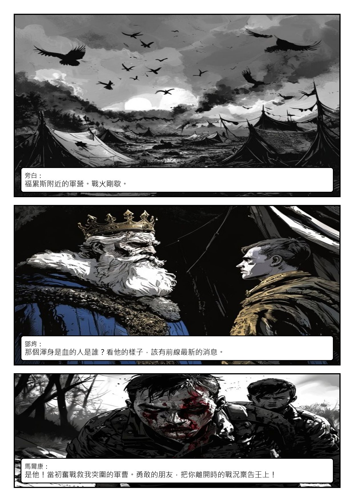
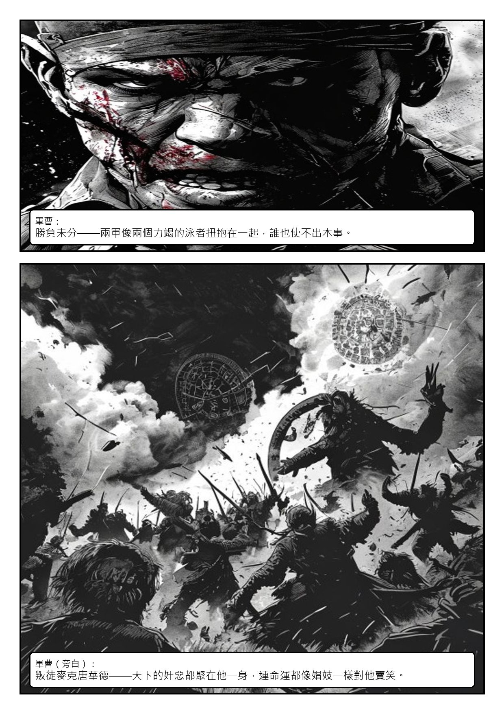
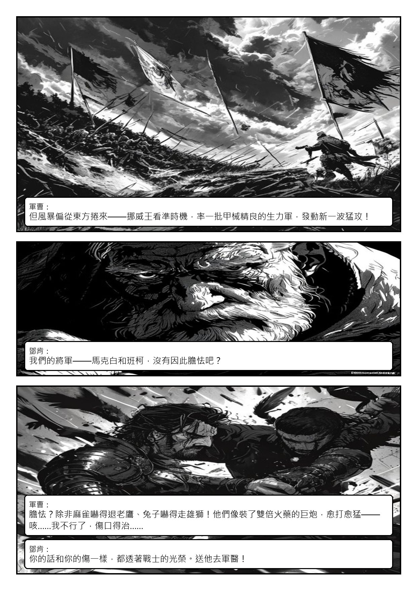
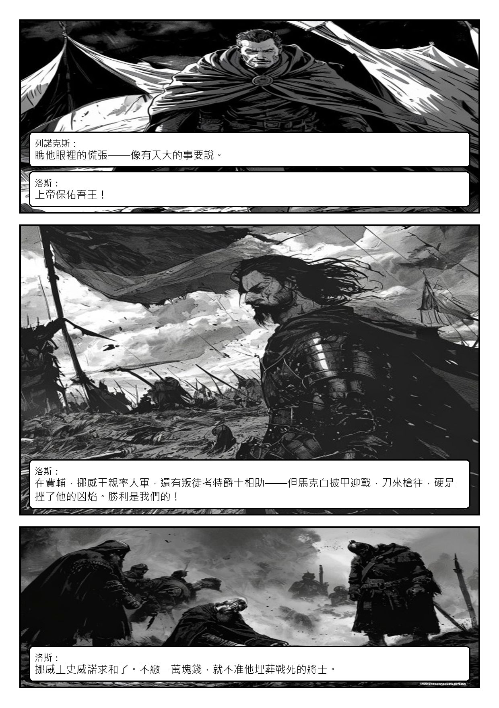
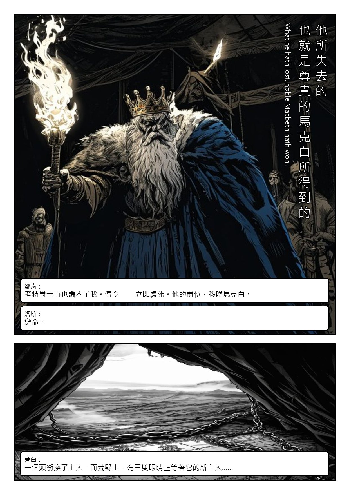

Act I · Scene II
戰報A Camp near Forres. Alarum within.
❦
浴血的軍曹向國王報告馬克白的戰功。
本場人物鄧肯王・白鬚金冠／馬爾康・金髮細冠／洛斯・灰斗篷／軍曹・浴血
首輪草稿・Pollinations 免費生圖——校構圖與對白用，角色定裝後會全面重生






Act I · Scene II
浴血的軍曹向國王報告馬克白的戰功。
本場人物鄧肯王・白鬚金冠／馬爾康・金髮細冠／洛斯・灰斗篷／軍曹・浴血
首輪草稿・Pollinations 免費生圖——校構圖與對白用，角色定裝後會全面重生




